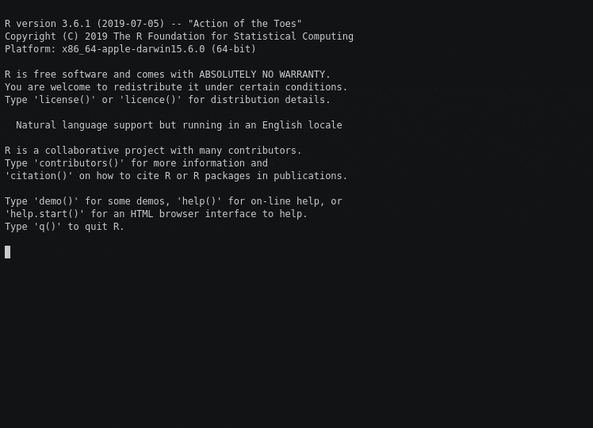

orderly is designed to support a number of flexible work patterns, depending on the size and structure of the group using it. This vignette describes several work patterns, in roughly increasing complexity.
The key issues to consider are
orderly resources) make it into the reports?This is the simplest pattern, and the one that orderly has the fewest opinions about. We imagine a single researcher using orderly to keep track of a set of analyses. They would configure orderly with an empty orderly_config.yml, and would probably add archive to .gitignore (drafts should always be gitignored).
As the researcher develops reports, they create new directories in src/ using orderly::orderly_new(), run the reports on their own system using orderly::orderly_run() and commit them into their archive using orderly::orderly_commit().
The researcher needs to take care that the reports are run in a clean R session, as objects and packages in R’s global execution environment are available to their reports.
If the researcher wants to share a report with someone else, orderly has no opinion on this, and they are free to email a file, or share it in whatever manner they prefer. The researcher may still quote the report id (e.g., 20200315-100734-10e3de8a) as a way for them to easily be able to get back to the version of the report that they sent, along with all its source files and resources.
Backup is the responsibility of the researcher; if the computer is backed up, or if the archive lives on a service like Dropbox or OneDrive, this may be sufficient.
If your reports are very small, then this may work for you. However, git becomes slow to use when many large files have been added to it, and most hosting platforms, including GitHub will prevent addition of files over a certain size and may complain about overall repositories reaching a certain size. Cloning the source tree will become increasingly painful, and you may become wary of even running a report because of the impact it may have on the above problems. In our opinion, you should store your archive outside of git and use an alternative method to back it up and distribute it.
This is the model that we use within the MRC Centre for Global Infectious Disease Analysis, and it does require considerably more setup, but also more reliability and flexibility.
As above, we use a single “source tree”, kept on GitHub or similar. However, someone in the group takes responsibility for setting up a copy of OrderlyWeb, our open source, self-hosted orderly server. The OrderlyWeb server software provides a number of things
orderly that can run reports as neededThis diagram may help show how the pieces fit together.
If OrderlyWeb has been deployed onto orderly.example.com, then we might declare it in orderly_config.yml
remote:
default:
driver: orderlyweb::orderlyweb_remote
args:
host: orderly.example.com
token: $GITHUB_TOKENOnce this is done, both Alice and Bob can run reports on that server, for example
orderly::orderly_run_remote("internal-2017-population-TUV-MHL", remote = "science")
this will print to screen the log, just as if it were running locally, though it is in fact running on a fresh R session remotely. After being run, this report is available to everyone and can be pulled as above
orderly::orderly_pull_archive("report-a", remote = "default")This can be extended further with the use of “staging environments”. This extends the above (two) scenario so that we have multiple remote orderly archives. These might be shared file archives, using orderly::orderly_remote_path or server hosted archives using orderlyweb::orderlyweb_remote or even a combination.
We designate one of these remotes to be our production environment and the others to be staging. In our work we have used the name pairs production/science and real/testing; the names used do not matter.
The orderly_config.yml configuration might then look like:
remote:
staging:
driver: orderlyweb::orderlyweb_remote
args:
host: orderly.example.com
port: 11443
token: $GITHUB_TOKEN
production:
driver: orderlyweb::orderlyweb_remote
args:
host: orderly.example.com
token: $GITHUB_TOKENNow, as part of the pull request review procedure, the reviewer will run the report on the staging environment, which means that it should work without error on the production environment if they have been set up the same way.
orderly::orderly_run_remote("report-a", remote = "staging", ref = "origin/myfeature")where myfeature is the name of the branch. This report can now be inspected (a URL will be generated which may be emailed around), and after being merged, the report can be run on the production server with
orderly::orderly_run_remote("report-a", remote = "production")We would recommend that on the production server only master be used. This can be enforced by adding master_only: true to the configuration as:
remote:
production:
driver: orderlyweb::orderlyweb_remote
master_only: true
args:
...As soon as there are multiple archives, resolving dependencies becomes more challenging. If Alice has two reports that depend on each other, she might want to use the most recent versions on her machine, or the most recent versions as seen by one of her remotes as that is where the report will eventually be run.
To allow this, when running orderly::orderly_run, Alice can provide the argument remote, indicating which of her remotes she would like to use for dependency resolution.
Now, even if she has more recent copies of the dependencies locally, her report will use the same copies as would be used on the server she chooses. Any local copies of remote reports will be downloaded to her computer before the report is run.
With some additional development on orderly, further work patterns are possible, including a decentralised approach. We might like to have a set of known “good” archives, or partially overlapping source trees, or archives that depend on data sources that come from other orderly archives that are not even present in their source tree.
To support this, we can have a network of orderly servers which can exchange sub-trees amongst each other. In this fashion, we can imagine the following things being possible
All the lower-level support for these patterns is available, and implementing them in orderly is not necessarily hard - we just have not found the need for this ourselves yet. If this is of interest please get in touch.
{kind=link}